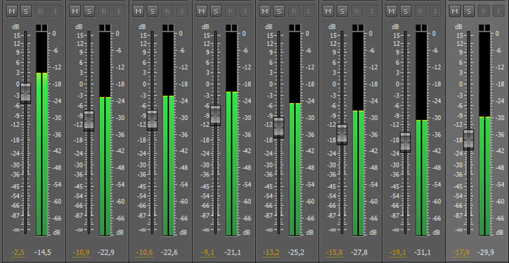
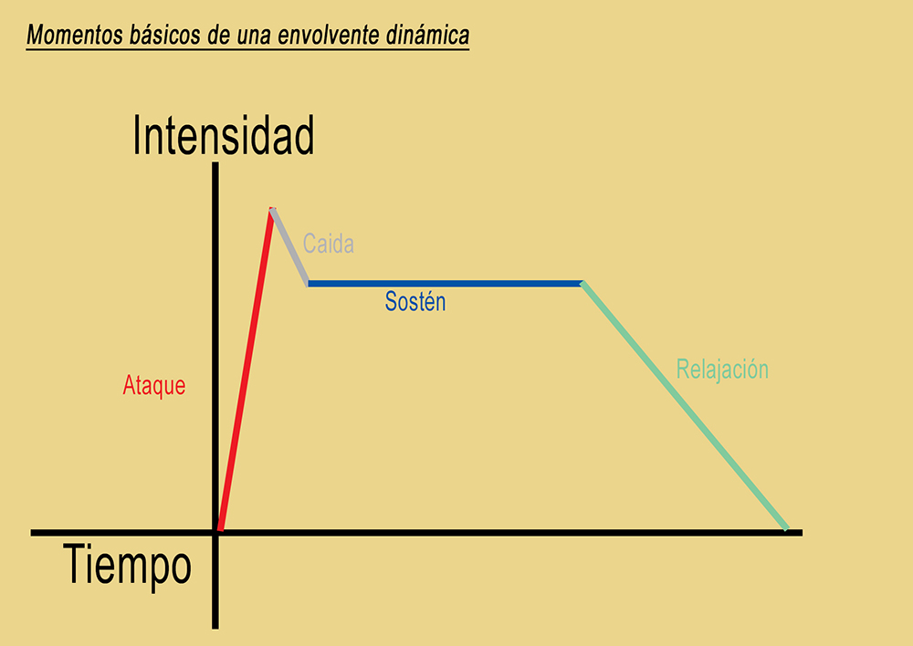

PROPIEDADES DEL SONIDO
ALTURA
La altura de un sonido se relaciona con la vibración del aire al excitarse con una fuente. El aire vibra, y hace que análogamente lo haga nuestro tímpano, huesos del oído medio y líquidos y membranas de nuestro oído interno. Lo que ocurre en el oído interno es enviado al cerebro y el mismo se ocupa, dependiendo de la información de vibración que le es enviada, de fabricar el sonido. El sonido es una sensación que el cerebro construye. Por lo tanto, el sonido sólo existe dentro nuestro.
Esas vibraciones se miden por segundo, a mayor vibración por segundo, mayor es la altura sonora que percibimos. En el caso del ser humano ocupa el rango de 20 vibraciones por segundo como mínimo, y 20000 vibraciones por segundo como máximo. Las vibraciones por segundo se expresan en Hertz (hz). 20hz son 20 vibraciones en un segundo, es el sonido audible más grave.
Cada una de las vibraciones es el tiempo que tarda la partícula de aire en ir y volver a la misma posición, a esto se lo denomina Ciclo, a la cantidad de ciclos que ocurren en 1 segundo se lo denomina Frecuencia. Entonces 20 ciclos en un segundos equivalen a una frecuencia de 20hz.
A continuación, podemos ver representados en un oscilograma varios ciclo de un tono puro (los sonidos puros son teóricos, ya que no se encuentran presentes en la naturaleza). Debajo del gráfico podemos escuchar un tono (puro) de una frecuencia de 440hz (440 ciclos en un segundo)
TONO PURO
Representación de varios ciclos de un tono puro (sinusoide).
Debajo podemos escuchar un tono puro de 440=Hz.
DOS TONOS PURO CON DIFERENTES ALTURAS
Representación de varios ciclos de un tono puro (sinusoide).
Debajo podemos escuchar el tono anterior de 440hz y otro tono de 700hz para comprobar asi que a mayor frecuencia por segundo, la altura será mayor en la experiencia auditiva.
En las figuras podemos ver algunos de los ciclos del 440hz y algunos de los de 700hz, si bien no están todos los ciclos de un segundo en el gráfico, la proporción está correcta.

440hz
700hz
SONIDO COMPLEJO DE ALTURA DEFINIDA CON 100HZ COMO FUNDAMENTAL Y SUS PRIMEROS 8 PARCIALES ARMÓNICOS
Dibujo de onda de cada parcial armónico.
Resultante de la suma de los 8 parciales armónicos.
Intensidad de cada parcial armónico (espectro).
Audio del tono complejo anterior.
SONIDO COMPLEJO DE ALTURA SEMIDEFINIDA
Aquí podemos observar nuevamente en el primer ejemplo de los espectrogramas, al sonido de altura definida de 100hz como fundamental y sus 8 primeros parciales armónicos.
En el segundo espectrograma vemos que se suman parciales inarmónicos, esto hace que la altura puntual comience a desdibujarse. Los inarmónicos que se incluyen, como se ve son 210hz 348hz 580hz y 750hz, ya no están en relación de múltiplo entero de la fundamental.
Escuchamos los dos ejemplos, primero sin los inarmónicos y luego con ellos.
RUIDO BLANCO
Dibujo de onda de un ruido blanco, esto comprende una banda de frecuencias que van de 20hz a 20khz. El ruido blanco contiene la suma de todos los parciales audibles por lo que filtrando correctamente el ruido blanco, podrían obtenerse todos los sonidos del mundo. Es lo análogo al color blanco.
Audio de Ruido Blanco.
DISTINTAS ALTURAS EN LOS RUIDOS
Los ruidos también tienen altura, no puntual pero dependiendo de la banda de frecuencias predominantes estos pueden ser más agudos o menos agudos.
En las imágenes vemos dos filtros aplicados al ruido blanco que escuchamos arriba. En el primero filtramos bandas de frecuencias graves y en el segundo agudas.
Ruido blanco filtrado desde 1000hz hacia abajo (Filtro Low Pass).
Ruido blanco filtrando desde 1000hz hacia arriba (Filtro Hight.Pass).
INTENSIDAD
LA INTENSIDAD ES LA ENERGÍA DEL SONIDO
A la intensidad del sonido también se la denomina amplitud, a mayor amplitud, mayor intensidad.
Existen varias maneras de medir la intensidad sonora, la más utilizada es la escala de decibeles (db) que es una escala logarítmica, su rango va de 0 (sonido menos audible) a 120 (umbral del dolor).
Cuando se trabaja en sonido digital, los db se llaman dbfs (decibeles de escala completa), esta escala tiene al 0 como valor máximo y el resto son valores negativos hasta llegar al infinito, que es la ausencia de señal. La profundidad de estos valores negativos depende de la profundidad de bits en la que se trabaje el audio.
Escuchamos ejemplos debajo:

Sonido puro a -10 dbfs.
Sonido puro a 0 dbfs.
DURACIÓN
LOS SONIDOS SE DESARROLLAN EN EL TIEMPO Y TIENEN SU DURACIÓN

Ruido blanco de corta duración.
Ruido blanco de larga duración.
A su vez, esta duración en el tiempo se ve afectada por su manera de desarrollarse. A esta manera de desarrollo en el tiempo se la denomina envolvente dinámica.
Los sonidos tienen un ATAQUE, una CAÍDA, SOSTÉN y RELAJACIÓN.
TIMBRE
El timbre del sonido depende de su configuración espectral, esto es de cómo conviven las intensidades de sus componentes parciales. Hay varias causas que hacen a la formante (timbre) de un sonido.
En las siguientes dos figuras encontramos, primero, al espectro anteriormente escuchado en la sección de "Altura". En segundo lugar vemos el mismo sonido fundamental con sus 8 parciales armónicos, pero esta vez, cambiando las intensidades individuales de los componentes. Esto hace que su espectro cambie, y por lo tanto, el timbre del sonido será otro pero no así su altura.
Audio comparativo de los dos espectros.
LOS OBJETOS SONOROS
Los objetos sonoros según P. Schaeffer
Schaeffer cataloga al sonido para poder realizar construcciones sonoras con una relación par par, esto es, que alguna característica entre los sonidos sea común para una construcción sonora coherente y más dinámica.
Él cataloga tres tipos de Masa (espectro sonoro) y tres tipos de Factura (envolvente dinámica):
- Masa tónica: sonidos con altura definida, un espectro armónico.
- Masa compleja: sonidos ruidosos, un espectro de "banda de ruidos".
- Masa variada: es cualquiera de los anteriores pero que glissa su altura
- Factura formada: (un sonido que tiene ataque cuerpo y extinción)
- Factura impulsiva: (un sonido que su envolvente dinámica tiene un gran ataque y una extinción rápida, un impulso)
- Factura iterada: (Los sonidos iterados son una mezcla de los dos anteriores, son micro impulsos incontables que hacen una envolvente global formada, como por ejemplo, el sonido de los dientes del peine al pasar el dedo, o la letra R).
Veamos un cuadro interactivo de doble entrada donde se pueden combinar la masa y la factura, si un sonido comparte alguna de estas dos cualidades, masa o factura, entonces ellos tienen un parentesco y son más afines al momento de pasar de un sonido a otro en una construcción sonora.
| FACTURA | ||||
| Formada | Impulsiva | Iterada | ||
| MASA | Tónica | Tónico/Formado | Tónico/Impulsivo | Tónico/Iterado |
| Compleja | Complejo/Formado | Complejo/Impulsivo | Complejo/Iterado | |
| Variada | Variado/formado | Variado/Impulsivo | Variado/Iterado | |
Pueden encontrar material de lectura al respecto en el libro "EL DISEÑO DE LA BANDA SONORA EN LOS LENGUAJES AUDIOVISUALES" del autor Carmelo Saitta: Ver aquí